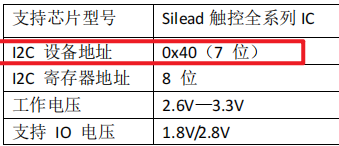
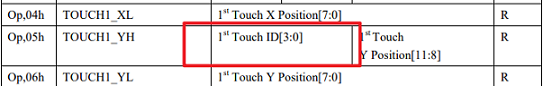
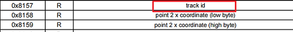
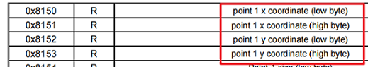
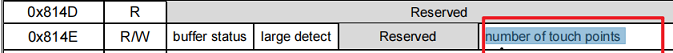
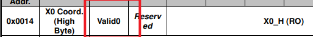
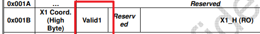
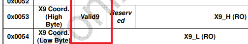
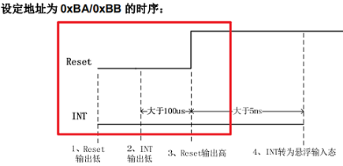

获取和配置触摸 IC 关键信息
16 May 2025
Read time: 6 minute(s)
本节旨在通过不同芯片的规格书，介绍如何获取触摸 IC 的关键信息，包括但不限于以下内容：
- 从机设备地址
- 触摸点 ID 号
- X 轴坐标值
- Y 轴坐标值
- 触摸点个数
- 硬件上电时序
从机设备地址
获取触摸芯片的从机地址是主控和外设通信的关键步骤，下面是两种常见的获取从机设备地址的方法：
-
硬件扫描：
在硬件连接正常的前提下可以通过i2c-tools扫描硬件获取从机设备的地址：- 使能
i2c-tools测试工具。Local packages options ---> Third-party packages options ---> [*] i2c-tools: a collection of i2c tools including scan/read/write - 在串口执行
i2c scan i2c interface命令，例如：i2c scan i2c1
i2c interface 需按照实际使用的接口进行设置。
以 GT911 为例，系统输出示例如下，表示 当前的从机地址为 0x5D：00 01 02 03 04 05 06 07 08 09 0A 0B 0C 0D 0E 0F 00: -- -- -- -- -- -- -- -- -- -- -- -- -- -- -- -- 10: -- -- -- -- -- -- -- -- -- -- -- -- -- -- -- -- 20: -- -- -- -- -- -- -- -- -- -- -- -- -- -- -- -- 30: -- -- -- -- -- -- -- -- -- -- -- -- -- -- -- -- 40: -- -- -- -- -- -- -- -- -- -- -- -- -- -- -- -- 50: -- -- -- -- -- -- -- -- -- -- -- -- -- 5D -- -- 60: -- -- -- -- -- -- -- -- -- -- -- -- -- -- -- -- 70: -- -- -- -- -- -- -- -- -- -- -- -- -- -- -- --
注：i2c-tools也可以用于检测主控与外设之间的硬件连接关系是否正常。如果执行上述命令后扫描不到任何从机地址，则需检查硬件是否正常以及 I2C 是否有外部上拉电阻等情况。 - 使能
-
从对应 IC 的规格书中获取信息。
通常情况下，IC 规格书会按照以下方式列示相关从机地址：-
直接提供 7 位从机地址。例如，GSL3676 的规格书中列示了 7 位从机地址为 0x40。
所以在设置从机地址时直接设置位 0x40 即可。
-
二种是包括了读写位的地址，例如 GT911 的规格书给出的从机地址会有两个，并且两个地址的差值为 1，那就说明这个地址是 8 位的，包括了读写位
所以在设置从机地址的时候我们需要将地址右移 1 位，才是真实从机地址，这里的 0xBA,0xBB 右移 1 位的地址为 0x5D
-
触摸点 ID 号
对于 ID 号的描述一般是
track id 或者是 Touch ID 等，包含 ID 字样的字段：- Track ID 示例：
off_set = read_index * C145HAX01_POINT_INFO_LEN; read_id = (read_buf[off_set + 3] >> 4) & 0x0f; pre_id[read_index] = read_id; input_x = ((read_buf[off_set + 1] & 0x0f) << 8) | read_buf[off_set + 2]; input_y = ((read_buf[off_set + 3] & 0xf) << 8) | read_buf[off_set + 4];
- Touch ID 示例：
off_set = read_index * 8; read_id = read_buf[off_set] & 0x0f; pre_id[read_index] = read_id; input_x = read_buf[off_set + 1] | (read_buf[off_set + 2] << 8); /* x */ input_y = read_buf[off_set + 3] | (read_buf[off_set + 4] << 8); /* y */ input_w = read_buf[off_set + 5] | (read_buf[off_set + 6] << 8); /* size */
XY 坐标计算
常见 CTP 的 XY 在 16 bit 的数据范围内，一般由两个字节组合而成，需要通过一定的逻辑计算出真实的坐标值。

off_set = read_index * 8; read_id = read_buf[off_set] & 0x0f; pre_id[read_index] = read_id; input_x = read_buf[off_set + 1] | (read_buf[off_set + 2] << 8); /* x */ input_y = read_buf[off_set + 3] | (read_buf[off_set + 4] << 8); /* y */ input_w = read_buf[off_set + 5] | (read_buf[off_set + 6] << 8); /* size */

off_set = read_index * 8; off_set = read_index * 8; read_id = read_buf[off_set] & 0x0f; pre_id[read_index] = read_id; input_x = read_buf[off_set + 1] | (read_buf[off_set + 2] << 8); /* x */ input_y = read_buf[off_set + 3] | (read_buf[off_set + 4] << 8); /* y */ input_w = read_buf[off_set + 5] | (read_buf[off_set + 6] << 8); /* size */由上面两幅图可以看出一个坐标值通常由高位和低位组合而成
触摸点个数
触摸事件可分为按下、移动和抬起，事件的获取是通过当前触摸点个数与上一次触摸点个数比较得到的，下面是几种比较常见的获取当前触摸点个数的方式：
-
从寄存器可以直接获取当前的触摸点个数

touch_num = point_status & 0x0f; /* get point num */ -
通过每根手指的触摸事件间接计算：

cmd[0] = (rt_uint8_t)((ST77922_TOUCH_INFO >> 8) & 0xFF); cmd[1] = (rt_uint8_t)(ST77922_TOUCH_INFO & 0xFF); /* read point num is touch_num */ if (st77922_read_regs(&st77922_client, cmd, read_buf, sizeof(read_buf)) != RT_EOK) { rt_kprintf("read point failed\n"); read_num = 0; goto __exit; } for (i = 0; i < ST77922_MAX_TOUCH; i++) { num_valid = ((read_buf[7 * i + 4] & 0x80) != 0) ? 1 : 0; touch_num += num_valid; }
TP 硬件上电时序

rt_pin_mode(*(rt_uint8_t *)cfg->user_data, PIN_MODE_OUTPUT); rt_pin_write(*(rt_uint8_t *)cfg->user_data, PIN_LOW); rt_thread_delay(10); // irq output 0 rt_pin_mode(cfg->irq_pin.pin, PIN_MODE_OUTPUT); rt_pin_write(cfg->irq_pin.pin, PIN_LOW); rt_thread_delay(2); // rst output 1 rt_pin_mode(*(rt_uint8_t *)cfg->user_data, PIN_MODE_OUTPUT); rt_pin_write(*(rt_uint8_t *)cfg->user_data, PIN_HIGH); rt_thread_delay(5); // rst input rt_pin_mode(*(rt_uint8_t *)cfg->user_data, PIN_MODE_INPUT); //irq output 0 rt_pin_mode(cfg->irq_pin.pin, PIN_MODE_OUTPUT); rt_pin_write(cfg->irq_pin.pin, PIN_LOW); rt_thread_delay(50); rt_pin_mode(cfg->irq_pin.pin, PIN_MODE_INPUT);